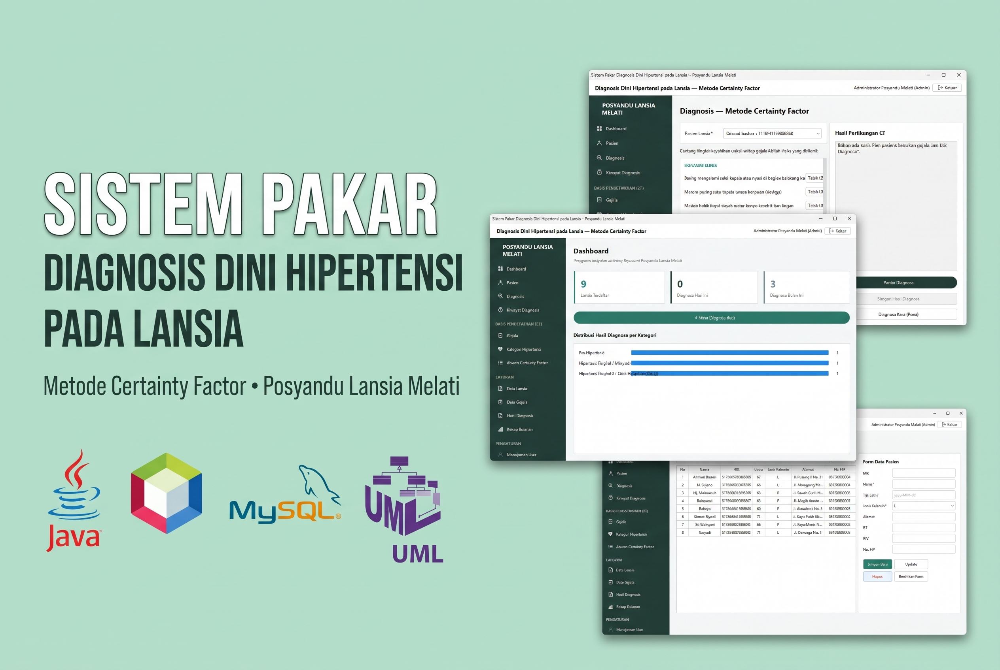
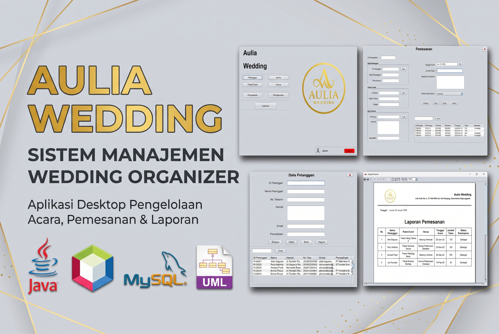
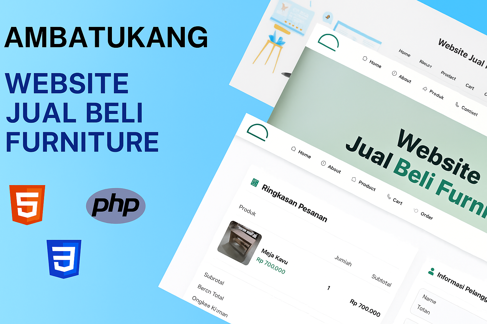
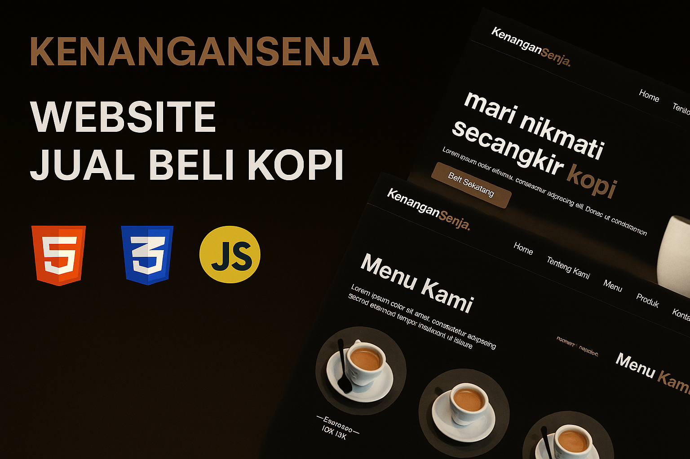
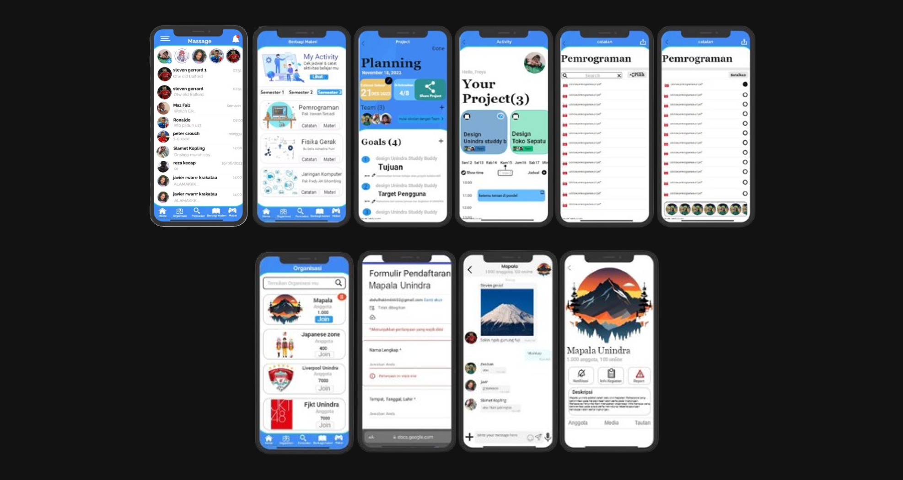
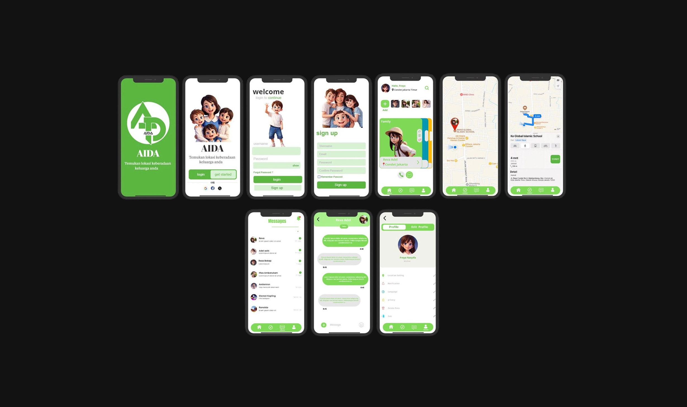
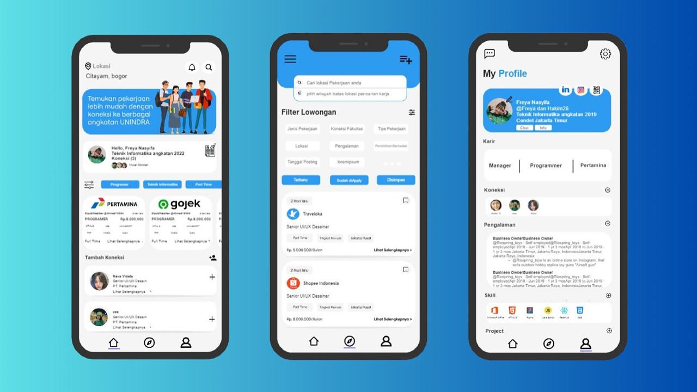
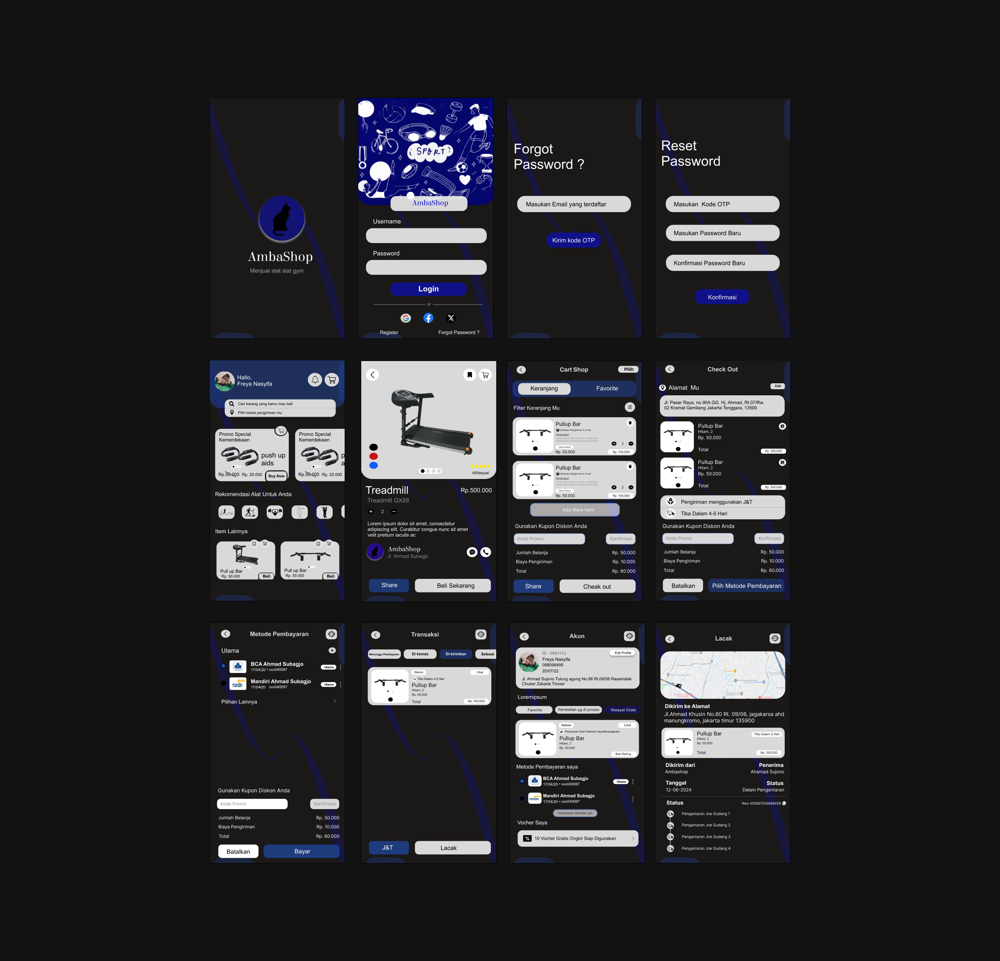
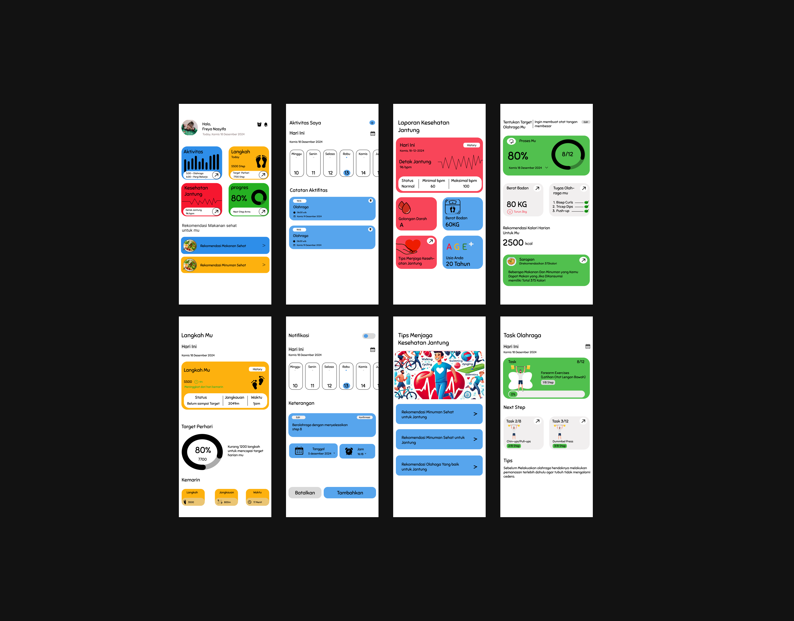

Lulusan S1 Teknik Informatika yang berpengalaman membangun aplikasi Java dan web (PHP/MySQL), dengan keahlian di analisis sistem, basis data, dan administrasi TI.
Saya lulusan S1 Teknik Informatika Universitas Indraprasta PGRI dengan pengalaman membangun aplikasi berbasis Java dan web (PHP/MySQL), mencakup autentikasi multi-peran dan manajemen data. Saya terbiasa dengan analisis dan perancangan sistem (UML), basis data, dan dokumentasi teknis.
Saya juga berpengalaman di bidang administrasi dan pengarsipan melalui dua praktik kerja lapangan. Saya terbuka pada posisi di bidang teknologi informasi di instansi pemerintah, BUMN, maupun swasta, khususnya analisis sistem, administrasi TI, dan pengelolaan data.
Proyek yang saya kerjakan meliputi skripsi, Kuliah Kerja Praktik (KKP), tugas perkuliahan, dan proyek mandiri untuk mengasah kemampuan. Seluruhnya dapat dilihat pada bagian Portofolio.

Proyek skripsi: aplikasi desktop dengan metode Certainty Factor untuk diagnosis dini hipertensi pada lansia di Posyandu Lansia Melati. Tingkat kesesuaian dengan pakar 86,67% pada 15 data uji.
Lihat Detail
Aplikasi desktop pengelolaan pelanggan, paket event, venue, pemesanan, dan pembayaran (DP dan lunas) dengan laporan PDF menggunakan JasperReports. Dikerjakan berkelompok pada Kuliah Kerja Praktik.
Lihat Detail
Website jual beli furniture dengan dua peran pengguna (admin dan pelanggan): katalog, keranjang, checkout, konfirmasi pembayaran, serta panel admin untuk produk dan pesanan.
Lihat Detail

Desain aplikasi mobile untuk mencari teman belajar sesama mahasiswa Unindra sekaligus memperluas relasi.
Lihat Detail
Desain aplikasi mobile untuk memantau lokasi anak serta melindunginya dari bahaya dan pengaruh negatif.
Lihat Detail
Desain platform untuk menampung dan menampilkan Curriculum Vitae (CV) mahasiswa dan alumni Universitas Indraprasta PGRI.
Lihat Detail

Saya terbuka untuk peluang kerja, kolaborasi proyek, dan diskusi seputar teknologi informasi.
Jl. Kober No. 60, Condet, Balekambang, Jakarta Timur
Media Sosial
GitHub
akimmm45
Instagram
a.akim13
TikTok
kime